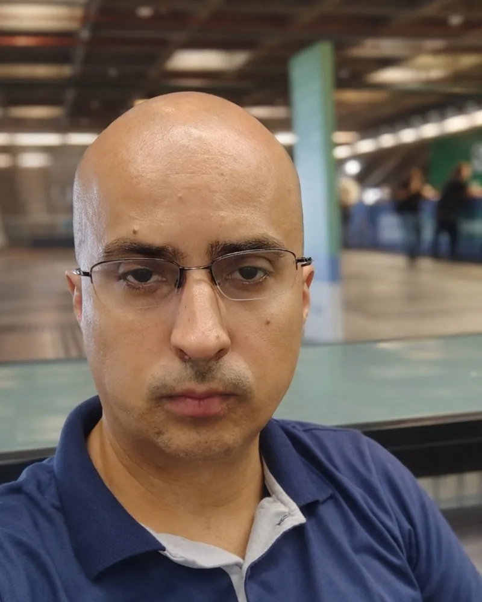

2002 a 2004
Técnico em Telecomunicações no Sesi
A base técnica que sustenta tudo que veio depois: entender de verdade como a comunicação funciona por dentro.
Nasci profissionalmente dentro da telefonia. Com o tempo, entendi que o equipamento é só metade do problema: a outra metade é o processo, as pessoas e o contexto de quem contrata.

A base técnica que sustenta tudo que veio depois: entender de verdade como a comunicação funciona por dentro.
Três anos e meio em campo, com a mão no equipamento. O começo dos 21 anos em tecnologia de comunicações.
Manutenção de sistemas de comunicação. O ponto de partida de uma trajetória que já passou de 18 anos na mesma casa.
Atuação no NOC, com suporte remoto a equipes técnicas e clientes em sistemas de tecnologia de comunicação.
Análise de cenários, desenvolvimento de projetos técnicos e formação de propostas tecno-comerciais para clientes corporativos.
Atuação estratégica no mercado governamental: identificação de oportunidades, análise técnica e administrativa de editais e desenvolvimento de negócios.
Voltar à sala de aula para dar nome e método ao que a prática já ensinou.
Se eu não sei, eu digo que não sei, e vou atrás. Proposta construída sobre dado errado não sobrevive à execução.
O setor público é um mercado de memória. Quem entrega bem hoje é procurado daqui a cinco anos.
Estudo constante: administração, economia, filosofia aplicada, tecnologia. Curiosidade é ferramenta de trabalho.
Processo organizado, sistema documentado, conhecimento compartilhado. O que fica depois importa.
Vim de Minas e me estabeleci na Baixada Santista. Aqui a casa virou projeto de vida: reorganizar, automatizar, escrevendo uma história. Fim de semana é cuidar ainda mais da família e criar repertório de vida, o tipo de coisa que currículo nenhum registra. Participo de iniciativas locais que complementam meu EU, como APM da escola, APAE, conselhos e audiências da cidade.